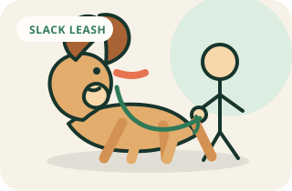

Walking skills
Teach a loose leash at home
Reward the position you want before adding the sidewalk, traffic, and other dogs.
Goal
What success looks like
Your dog can walk several calm steps beside you with slack in the leash.
Visual method
See the sequence before you practice
A loose leash has a visible U-shape and no steady pressure. Reward the dog for choosing to stay near your side.

Complete method
One session, start to finish
- 01
Set up
Use a flat collar or well-fitted harness and a 4 to 6 foot leash.
- 02
Warm up
Repeat one skill your dog already knows for 30 to 60 seconds.
- 03
Teach
Stand with your dog beside you, mark, and reward before you move. Repeat until standing near your leg is easy and pleasant.
- 04
Reward
Mark the exact behavior, then deliver the reward within one second.
- 05
Repeat
Do three to five easy repetitions. If two cues are missed, make the task easier.
- 06
Advance
Your dog walks ten calm steps with a loose leash in two low-distraction locations, with rewards delivered after the behavior.
- 07
Finish
Use your release cue, reward one easy win, and end while your dog is still engaged.
Before you begin
Set up for an easy win
- Use a flat collar or well-fitted harness and a 4 to 6 foot leash.
- Avoid retractable leashes for training walks.
- Start in a hallway, living room, or other low-distraction space.
- Keep treats in a pouch so your hands stay free.
Step by step
How to teach it
- 01
Reward the starting position
Stand with your dog beside you, mark, and reward before you move. Repeat until standing near your leg is easy and pleasant.
- 02
Take one calm step
Take one step and reward if your dog stays near your side with slack in the leash. Reset and repeat.
- 03
Add five to ten steps
Walk a short distance and reward check-ins or a loose leash. Feed at your leg or toss the treat behind you to reset.
- 04
Pause when the leash tightens
Stop moving, keep your arms relaxed, and wait for slack. If your dog cannot create slack, gently turn around or move closer instead of pulling.
- 05
Practice turns and easy pace changes
Add a gentle turn, a stop, or a slow step. Reward the moment your dog reconnects with your side.
- 06
Take it outside carefully
Repeat in a quiet yard, driveway, or low-traffic path. Increase one variable at a time and keep sessions short.
Success checkpoint
You are ready to add difficulty when…
Your dog walks ten calm steps with a loose leash in two low-distraction locations, with rewards delivered after the behavior.
When progress stalls
Common problems and fixes
My dog pulls toward every smell.
Smelling is enrichment. Allow sniff breaks on cue, then practice a few steps and reward a check-in.
My dog crosses in front of me.
Use a treat at your side, reward position, and take shorter steps. Avoid stepping on or jerking the leash.
My dog freezes outdoors.
Move back to an easier location, shorten the session, and reward any calm step. A qualified trainer can help if fear is involved.
Trainer note
The goal is not a perfect heel. A relaxed leash and a dog who can still explore safely is a practical everyday win.